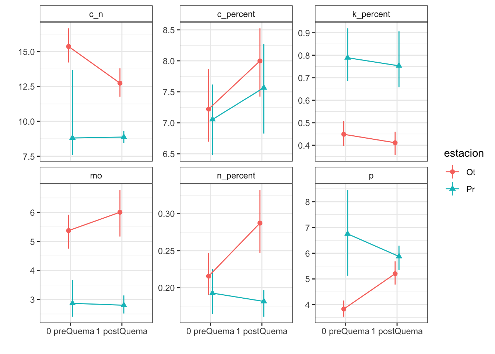
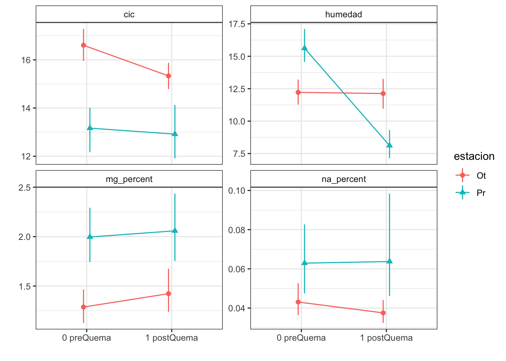

Pre- and post-fire anaylisis of soils by Fire date
Last updated: 2022-02-17
Checks: 7 0
Knit directory: soil_alcontar/
This reproducible R Markdown analysis was created with workflowr (version 1.7.0). The Checks tab describes the reproducibility checks that were applied when the results were created. The Past versions tab lists the development history.
Great! Since the R Markdown file has been committed to the Git repository, you know the exact version of the code that produced these results.
Great job! The global environment was empty. Objects defined in the global environment can affect the analysis in your R Markdown file in unknown ways. For reproduciblity it’s best to always run the code in an empty environment.
The command set.seed(20210907) was run prior to running the code in the R Markdown file. Setting a seed ensures that any results that rely on randomness, e.g. subsampling or permutations, are reproducible.
Great job! Recording the operating system, R version, and package versions is critical for reproducibility.
Nice! There were no cached chunks for this analysis, so you can be confident that you successfully produced the results during this run.
Great job! Using relative paths to the files within your workflowr project makes it easier to run your code on other machines.
Great! You are using Git for version control. Tracking code development and connecting the code version to the results is critical for reproducibility.
The results in this page were generated with repository version 5f1b03d. See the Past versions tab to see a history of the changes made to the R Markdown and HTML files.
Note that you need to be careful to ensure that all relevant files for the analysis have been committed to Git prior to generating the results (you can use wflow_publish or wflow_git_commit). workflowr only checks the R Markdown file, but you know if there are other scripts or data files that it depends on. Below is the status of the Git repository when the results were generated:
Ignored files:
Ignored: .RData
Ignored: .Rhistory
Ignored: .Rproj.user/C369E4F4/
Ignored: .Rproj.user/shared/notebooks/0EF54E14-NOBORRAR/
Ignored: .Rproj.user/shared/notebooks/27FF967E-analysis_pre_post_epoca/
Ignored: .Rproj.user/shared/notebooks/33E25F73-analysis_resilience/
Ignored: .Rproj.user/shared/notebooks/3F603CAC-map/
Ignored: .Rproj.user/shared/notebooks/4672E36C-study_area/
Ignored: .Rproj.user/shared/notebooks/4A68381F-general_overview_soils/
Ignored: .Rproj.user/shared/notebooks/4E13660A-temporal_comparison/
Ignored: .Rproj.user/shared/notebooks/5D919DFD-analysis_zona_time_postFire/
Ignored: .Rproj.user/shared/notebooks/827D0727-analysis_pre_post/
Ignored: .Rproj.user/shared/notebooks/A3F813C2-index/
Ignored: .Rproj.user/shared/notebooks/D4E3AA10-analysis_zona_time/
Untracked files:
Untracked: analysis/NOBORRAR.Rmd
Untracked: analysis/analysis_pre_post_cache/
Untracked: analysis/test.Rmd
Untracked: data/spatial/lucdeme/
Untracked: data/spatial/test/
Untracked: map.Rmd
Untracked: output/anovas_pre_post_epoca.csv
Untracked: output/anovas_zona_time.csv
Untracked: output/anovas_zona_time_postFire.csv
Untracked: output/meanboot_pre_post_epoca.csv
Untracked: scripts/generate_3dview.R
Unstaged changes:
Modified: analysis/_site.yml
Modified: data/Resultados_Suelos_2018_2021_v2.xlsx
Modified: data/spatial/.DS_Store
Modified: data/spatial/01_EP_ANDALUCIA/EP_Andalucía.dbf
Deleted: index.Rmd
Modified: output/anovas_pre_post.csv
Modified: scripts/00_prepare_data.R
Modified: temporal_comparison.Rmd
Note that any generated files, e.g. HTML, png, CSS, etc., are not included in this status report because it is ok for generated content to have uncommitted changes.
These are the previous versions of the repository in which changes were made to the R Markdown (analysis/analysis_pre_post_epoca.Rmd) and HTML (docs/analysis_pre_post_epoca.html) files. If you’ve configured a remote Git repository (see ?wflow_git_remote), click on the hyperlinks in the table below to view the files as they were in that past version.
| File | Version | Author | Date | Message |
|---|---|---|---|---|
| html | 8960975 | ajpelu | 2021-09-17 | Build site. |
| Rmd | 3d973fc | ajpelu | 2021-09-17 | wflow_publish(“analysis/analysis_pre_post_epoca.Rmd”) |
| html | 419d019 | ajpelu | 2021-09-15 | Build site. |
| Rmd | 980ca0e | ajpelu | 2021-09-15 | add full contrasts interaction |
| html | 3307f05 | ajpelu | 2021-09-14 | Build site. |
| Rmd | 56e0949 | ajpelu | 2021-09-14 | change fechaQuema por estacion; momento por |
| html | 389b963 | ajpelu | 2021-09-14 | Build site. |
| Rmd | 9ba7a9d | ajpelu | 2021-09-14 | add analysis by date Fire |
Prepare data
raw_soil <- readxl::read_excel(here::here("data/Resultados_Suelos_2018_2021_v2.xlsx"),
sheet = "SEGUIMIENTO_SUELOS_sin_ouliers") %>% janitor::clean_names() %>% mutate(treatment_name = case_when(str_detect(geo_parcela_nombre,
"NP_") ~ "Autumn Burning / No Browsing", str_detect(geo_parcela_nombre, "PR_") ~
"Spring Burning / Browsing", str_detect(geo_parcela_nombre, "P_") ~ "Autumn Burning / Browsing"),
zona = case_when(str_detect(geo_parcela_nombre, "NP_") ~ "QOt_NP", str_detect(geo_parcela_nombre,
"PR_") ~ "QPr_P", str_detect(geo_parcela_nombre, "P_") ~ "QOt_P"), estacion = case_when(str_detect(geo_parcela_nombre,
"NP_") ~ "Ot", str_detect(geo_parcela_nombre, "PR_") ~ "Pr", str_detect(geo_parcela_nombre,
"P_") ~ "Ot"), date = lubridate::ymd(fecha), fecha = case_when(pre_post_quema ==
"Prequema" ~ "0 preQuema", pre_post_quema == "Postquema" ~ "1 postQuema"))- Select data pre- and intermediately post-fire (first post-fire sampling: “2018-12-20” and “2019-05-09” for autumn and spring fires respectively)
soil <- raw_soil %>% filter(date %in% lubridate::ymd(c("2018-12-11", "2018-12-20",
"2019-04-24", "2019-05-09"))) %>% mutate(zona = as.factor(zona), fecha = as.factor(fecha))- Structure of the data
estacion
fecha Ot Pr
0 preQuema 48 24
1 postQuema 48 24Modelize
- For each response variable, the approach modelling is
\(Y \sim estacion (Ot|Pr) + fecha(pre|post) + estacion \times fecha\)
using the “(1|estacion:geo_parcela_nombre)” as nested random effects
Then explore error distribution of the variable response and model diagnostics
Select the appropiate error distribution and use LMM or GLMM
Explore Post-hoc
Plot interactions
Humedad
Model
Type III Analysis of Variance Table with Satterthwaite's method
Sum Sq Mean Sq NumDF DenDF F value Pr(>F)
fecha 461.74 461.74 1 130 50.4197 7.257e-11 ***
estacion 0.53 0.53 1 10 0.0575 0.8153
fecha:estacion 439.95 439.95 1 130 48.0407 1.748e-10 ***
---
Signif. codes: 0 '***' 0.001 '**' 0.01 '*' 0.05 '.' 0.1 ' ' 1 Sum Sq Mean Sq NumDF DenDF F value Pr(>F)
fecha 461.7404592 461.7404592 1 130 50.41969020 7.256505e-11
estacion 0.5268064 0.5268064 1 10 0.05752456 8.152969e-01
fecha:estacion 439.9539281 439.9539281 1 130 48.04071273 1.748462e-10
variable factor
fecha humedad fecha
estacion humedad estacion
fecha:estacion humedad fecha:estacionPost-hoc
| estacion | fecha | contrast | estimate | SE | df | t.ratio | p.value |
|---|---|---|---|---|---|---|---|
| Ot | . | 1 postQuema - 0 preQuema | -0.0907 | 0.6177 | 130.0000 | -0.1468 | 0.9998 |
| Pr | . | 1 postQuema - 0 preQuema | -7.5065 | 0.8736 | 130.0000 | -8.5927 | 0.0000 |
| . | 0 preQuema | Pr - Ot | 3.4031 | 1.3789 | 13.8239 | 2.4679 | 0.1048 |
| . | 1 postQuema | Pr - Ot | -4.0127 | 1.3789 | 13.8239 | -2.9100 | 0.0454 |
CIC
Model
Type III Analysis of Variance Table with Satterthwaite's method
Sum Sq Mean Sq NumDF DenDF F value Pr(>F)
fecha 18.503 18.503 1 130 5.1118 0.02543 *
estacion 35.605 35.605 1 10 9.8361 0.01058 *
fecha:estacion 8.337 8.337 1 130 2.3031 0.13154
---
Signif. codes: 0 '***' 0.001 '**' 0.01 '*' 0.05 '.' 0.1 ' ' 1 Sum Sq Mean Sq NumDF DenDF F value Pr(>F)
fecha 18.503472 18.503472 1 130.000001 5.111751 0.02542616
estacion 35.604511 35.604511 1 9.999998 9.836067 0.01057742
fecha:estacion 8.336806 8.336806 1 130.000001 2.303118 0.13154272
variable factor
fecha cic fecha
estacion cic estacion
fecha:estacion cic fecha:estacionPost-hoc
| estacion | fecha | contrast | estimate | SE | df | t.ratio | p.value |
|---|---|---|---|---|---|---|---|
| Ot | . | 1 postQuema - 0 preQuema | -1.2708 | 0.3884 | 130.0000 | -3.2723 | 0.0055 |
| Pr | . | 1 postQuema - 0 preQuema | -0.2500 | 0.5492 | 130.0000 | -0.4552 | 0.9849 |
| . | 0 preQuema | Pr - Ot | -3.4375 | 0.9921 | 12.7494 | -3.4650 | 0.0171 |
| . | 1 postQuema | Pr - Ot | -2.4167 | 0.9921 | 12.7494 | -2.4360 | 0.1159 |
C
Model
Type III Analysis of Variance Table with Satterthwaite's method
Sum Sq Mean Sq NumDF DenDF F value Pr(>F)
fecha 13.3214 13.3214 1 130 6.1796 0.01419 *
estacion 0.2542 0.2542 1 10 0.1179 0.73843
fecha:estacion 0.5636 0.5636 1 130 0.2614 0.61001
---
Signif. codes: 0 '***' 0.001 '**' 0.01 '*' 0.05 '.' 0.1 ' ' 1 Sum Sq Mean Sq NumDF DenDF F value Pr(>F)
fecha 13.3214014 13.3214014 1 130.000000 6.1795805 0.01419189
estacion 0.2541669 0.2541669 1 9.999999 0.1179039 0.73842869
fecha:estacion 0.5635681 0.5635681 1 130.000000 0.2614300 0.61000674
variable factor
fecha c_percent fecha
estacion c_percent estacion
fecha:estacion c_percent fecha:estacionPost-hoc
| estacion | fecha | contrast | estimate | SE | df | t.ratio | p.value |
|---|---|---|---|---|---|---|---|
| Ot | . | 1 postQuema - 0 preQuema | 0.7779 | 0.2997 | 130.0000 | 2.5956 | 0.0414 |
| Pr | . | 1 postQuema - 0 preQuema | 0.5125 | 0.4238 | 130.0000 | 1.2092 | 0.6463 |
| . | 0 preQuema | Pr - Ot | -0.1667 | 0.9097 | 11.8438 | -0.1832 | 0.9996 |
| . | 1 postQuema | Pr - Ot | -0.4321 | 0.9097 | 11.8438 | -0.4750 | 0.9838 |
Fe
Model
Fitting one lmer() model. [DONE]
Calculating p-values. [DONE]Mixed Model Anova Table (Type 3 tests, KR-method)
Model: fe_percent ~ fecha * estacion + (1 | estacion:geo_parcela_nombre)
Data: df_model
Effect df F p.value
1 fecha 1, 130 0.28 .598
2 estacion 1, 10 0.46 .512
3 fecha:estacion 1, 130 0.21 .648
---
Signif. codes: 0 '***' 0.001 '**' 0.01 '*' 0.05 '+' 0.1 ' ' 1Fitting one lmer() model. [DONE]
Calculating p-values. [DONE]Mixed Model Anova Table (Type 3 tests, KR-method)
Model: fe_percent ~ fecha * estacion + (1 | estacion:geo_parcela_nombre)
Data: df_model
num Df den Df F Pr(>F)
fecha 1 130 0.2796 0.5979
estacion 1 10 0.4631 0.5116
fecha:estacion 1 130 0.2093 0.6481Post-hoc
| estacion | fecha | contrast | estimate | SE | df | z.ratio | p.value |
|---|---|---|---|---|---|---|---|
| Ot | . | 1 postQuema - 0 preQuema | 0.0169 | 0.0200 | Inf | 0.8433 | 0.8696 |
| Pr | . | 1 postQuema - 0 preQuema | 0.0011 | 0.0266 | Inf | 0.0408 | 1.0000 |
| . | 0 preQuema | Pr - Ot | -0.0285 | 0.0714 | Inf | -0.3989 | 0.9908 |
| . | 1 postQuema | Pr - Ot | -0.0443 | 0.0715 | Inf | -0.6193 | 0.9535 |
MO
Model
Fitting one lmer() model. [DONE]
Calculating p-values. [DONE]Mixed Model Anova Table (Type 3 tests, KR-method)
Model: mo ~ fecha * estacion + (1 | estacion:geo_parcela_nombre)
Data: df_model
Effect df F p.value
1 fecha 1, 130 0.60 .439
2 estacion 1, 10 35.18 *** <.001
3 fecha:estacion 1, 130 0.91 .341
---
Signif. codes: 0 '***' 0.001 '**' 0.01 '*' 0.05 '+' 0.1 ' ' 1Fitting one lmer() model. [DONE]
Calculating p-values. [DONE]Mixed Model Anova Table (Type 3 tests, KR-method)
Model: mo ~ fecha * estacion + (1 | estacion:geo_parcela_nombre)
Data: df_model
num Df den Df F Pr(>F)
fecha 1 130 0.6020 0.4392419
estacion 1 10 35.1850 0.0001448 ***
fecha:estacion 1 130 0.9143 0.3407472
---
Signif. codes: 0 '***' 0.001 '**' 0.01 '*' 0.05 '.' 0.1 ' ' 1Post-hoc
| estacion | fecha | contrast | estimate | SE | df | z.ratio | p.value |
|---|---|---|---|---|---|---|---|
| Ot | . | 1 postQuema - 0 preQuema | -0.0193 | 0.0152 | Inf | -1.2691 | 0.5994 |
| Pr | . | 1 postQuema - 0 preQuema | 0.0082 | 0.0433 | Inf | 0.1882 | 0.9995 |
| . | 0 preQuema | Pr - Ot | 0.1608 | 0.0375 | Inf | 4.2902 | 0.0001 |
| . | 1 postQuema | Pr - Ot | 0.1882 | 0.0377 | Inf | 4.9905 | 0.0000 |
K
Model
Fitting one lmer() model. [DONE]
Calculating p-values. [DONE]Mixed Model Anova Table (Type 3 tests, KR-method)
Model: k_percent ~ fecha * estacion + (1 | estacion:geo_parcela_nombre)
Data: df_model
Effect df F p.value
1 fecha 1, 130 1.92 .168
2 estacion 1, 10 8.33 * .016
3 fecha:estacion 1, 130 0.00 .976
---
Signif. codes: 0 '***' 0.001 '**' 0.01 '*' 0.05 '+' 0.1 ' ' 1Fitting one lmer() model. [DONE]
Calculating p-values. [DONE]Mixed Model Anova Table (Type 3 tests, KR-method)
Model: k_percent ~ fecha * estacion + (1 | estacion:geo_parcela_nombre)
Data: df_model
num Df den Df F Pr(>F)
fecha 1 130 1.9189 0.16835
estacion 1 10 8.3254 0.01624 *
fecha:estacion 1 130 0.0009 0.97555
---
Signif. codes: 0 '***' 0.001 '**' 0.01 '*' 0.05 '.' 0.1 ' ' 1Post-hoc
| estacion | fecha | contrast | estimate | SE | df | z.ratio | p.value |
|---|---|---|---|---|---|---|---|
| Ot | . | 1 postQuema - 0 preQuema | 0.1833 | 0.1323 | Inf | 1.3860 | 0.5156 |
| Pr | . | 1 postQuema - 0 preQuema | 0.0554 | 0.1050 | Inf | 0.5280 | 0.9737 |
| . | 0 preQuema | Pr - Ot | -1.1566 | 0.5704 | Inf | -2.0277 | 0.1598 |
| . | 1 postQuema | Pr - Ot | -1.2845 | 0.5720 | Inf | -2.2456 | 0.0953 |
Mg
Model
Fitting one lmer() model. [DONE]
Calculating p-values. [DONE]Mixed Model Anova Table (Type 3 tests, KR-method)
Model: mg_percent ~ fecha * estacion + (1 | estacion:geo_parcela_nombre)
Data: df_model
Effect df F p.value
1 fecha 1, 130 0.96 .329
2 estacion 1, 10 4.01 + .073
3 fecha:estacion 1, 130 0.13 .719
---
Signif. codes: 0 '***' 0.001 '**' 0.01 '*' 0.05 '+' 0.1 ' ' 1Fitting one lmer() model. [DONE]
Calculating p-values. [DONE]Mixed Model Anova Table (Type 3 tests, KR-method)
Model: mg_percent ~ fecha * estacion + (1 | estacion:geo_parcela_nombre)
Data: df_model
num Df den Df F Pr(>F)
fecha 1 130 0.9587 0.32933
estacion 1 10 4.0114 0.07304 .
fecha:estacion 1 130 0.1300 0.71903
---
Signif. codes: 0 '***' 0.001 '**' 0.01 '*' 0.05 '.' 0.1 ' ' 1Post-hoc
| estacion | fecha | contrast | estimate | SE | df | z.ratio | p.value |
|---|---|---|---|---|---|---|---|
| Ot | . | 1 postQuema - 0 preQuema | -0.0643 | 0.0469 | Inf | -1.3715 | 0.5260 |
| Pr | . | 1 postQuema - 0 preQuema | -0.0146 | 0.0463 | Inf | -0.3147 | 0.9963 |
| . | 0 preQuema | Pr - Ot | -0.3632 | 0.1895 | Inf | -1.9168 | 0.2034 |
| . | 1 postQuema | Pr - Ot | -0.3134 | 0.1888 | Inf | -1.6602 | 0.3347 |
C/N
Model
Fitting one lmer() model. [DONE]
Calculating p-values. [DONE]Mixed Model Anova Table (Type 3 tests, KR-method)
Model: c_n ~ fecha * estacion + (1 | estacion:geo_parcela_nombre)
Data: df_model
Effect df F p.value
1 fecha 1, 130 3.83 + .053
2 estacion 1, 10 21.23 *** <.001
3 fecha:estacion 1, 130 4.23 * .042
---
Signif. codes: 0 '***' 0.001 '**' 0.01 '*' 0.05 '+' 0.1 ' ' 1Fitting one lmer() model. [DONE]
Calculating p-values. [DONE]Mixed Model Anova Table (Type 3 tests, KR-method)
Model: c_n ~ fecha * estacion + (1 | estacion:geo_parcela_nombre)
Data: df_model
num Df den Df F Pr(>F)
fecha 1 130 3.8277 0.0525545 .
estacion 1 10 21.2279 0.0009691 ***
fecha:estacion 1 130 4.2258 0.0418155 *
---
Signif. codes: 0 '***' 0.001 '**' 0.01 '*' 0.05 '.' 0.1 ' ' 1Post-hoc
| estacion | fecha | contrast | estimate | SE | df | z.ratio | p.value |
|---|---|---|---|---|---|---|---|
| Ot | . | 1 postQuema - 0 preQuema | 0.0132 | 0.0038 | Inf | 3.4663 | 0.0021 |
| Pr | . | 1 postQuema - 0 preQuema | -0.0008 | 0.0085 | Inf | -0.0972 | 1.0000 |
| . | 0 preQuema | Pr - Ot | 0.0473 | 0.0099 | Inf | 4.7551 | 0.0000 |
| . | 1 postQuema | Pr - Ot | 0.0332 | 0.0100 | Inf | 3.3065 | 0.0038 |
P
Model
Fitting one lmer() model. [DONE]
Calculating p-values. [DONE]Mixed Model Anova Table (Type 3 tests, KR-method)
Model: p ~ fecha * estacion + (1 | estacion:geo_parcela_nombre)
Data: df_model
Effect df F p.value
1 fecha 1, 130 0.45 .502
2 estacion 1, 10 8.17 * .017
3 fecha:estacion 1, 130 9.31 ** .003
---
Signif. codes: 0 '***' 0.001 '**' 0.01 '*' 0.05 '+' 0.1 ' ' 1Fitting one lmer() model. [DONE]
Calculating p-values. [DONE]Mixed Model Anova Table (Type 3 tests, KR-method)
Model: p ~ fecha * estacion + (1 | estacion:geo_parcela_nombre)
Data: df_model
num Df den Df F Pr(>F)
fecha 1 130 0.4536 0.501823
estacion 1 10 8.1689 0.017011 *
fecha:estacion 1 130 9.3060 0.002769 **
---
Signif. codes: 0 '***' 0.001 '**' 0.01 '*' 0.05 '.' 0.1 ' ' 1Post-hoc
| estacion | fecha | contrast | estimate | SE | df | z.ratio | p.value |
|---|---|---|---|---|---|---|---|
| Ot | . | 1 postQuema - 0 preQuema | 0.3057 | 0.0947 | Inf | 3.2274 | 0.0050 |
| Pr | . | 1 postQuema - 0 preQuema | -0.1388 | 0.1140 | Inf | -1.2173 | 0.6364 |
| . | 0 preQuema | Pr - Ot | 0.5604 | 0.1255 | Inf | 4.4635 | 0.0000 |
| . | 1 postQuema | Pr - Ot | 0.1158 | 0.1229 | Inf | 0.9422 | 0.8171 |
N
Model
Analysis of Deviance Table (Type II Wald chisquare tests)
Response: n_percent
Chisq Df Pr(>Chisq)
fecha 5.1208 1 0.023641 *
estacion 7.2940 1 0.006919 **
fecha:estacion 2.6712 1 0.102179
---
Signif. codes: 0 '***' 0.001 '**' 0.01 '*' 0.05 '.' 0.1 ' ' 1Post-hoc
| estacion | fecha | contrast | estimate | SE | df | t.ratio | p.value |
|---|---|---|---|---|---|---|---|
| Ot | . | 1 postQuema - 0 preQuema | 0.3240 | 0.1161 | 138 | 2.7895 | 0.0239 |
| Pr | . | 1 postQuema - 0 preQuema | -0.0182 | 0.1741 | 138 | -0.1042 | 1.0000 |
| . | 0 preQuema | Pr - Ot | -0.1088 | 0.1493 | 138 | -0.7291 | 0.9194 |
| . | 1 postQuema | Pr - Ot | -0.4509 | 0.1468 | 138 | -3.0717 | 0.0102 |
Na
Model
Analysis of Deviance Table (Type II Wald chisquare tests)
Response: na_percent
Chisq Df Pr(>Chisq)
fecha 0.7349 1 0.3913
estacion 2.5709 1 0.1088
fecha:estacion 0.0700 1 0.7913Post-hoc
| estacion | fecha | contrast | estimate | SE | df | t.ratio | p.value |
|---|---|---|---|---|---|---|---|
| Ot | . | 1 postQuema - 0 preQuema | -0.0936 | 0.1124 | 138 | -0.8327 | 0.8759 |
| Pr | . | 1 postQuema - 0 preQuema | -0.0463 | 0.1387 | 138 | -0.3340 | 0.9954 |
| . | 0 preQuema | Pr - Ot | 0.3170 | 0.2293 | 138 | 1.3825 | 0.5232 |
| . | 1 postQuema | Pr - Ot | 0.3642 | 0.2309 | 138 | 1.5773 | 0.3921 |
pH agua
Model
Fitting one lmer() model. [DONE]
Calculating p-values. [DONE]Mixed Model Anova Table (Type 3 tests, KR-method)
Model: p_h_agua_eez ~ fecha * estacion + (1 | estacion:geo_parcela_nombre)
Data: df_model
Effect df F p.value
1 fecha 1, 130 0.99 .322
2 estacion 1, 10 9.29 * .012
3 fecha:estacion 1, 130 10.51 ** .002
---
Signif. codes: 0 '***' 0.001 '**' 0.01 '*' 0.05 '+' 0.1 ' ' 1Fitting one lmer() model. [DONE]
Calculating p-values. [DONE]Mixed Model Anova Table (Type 3 tests, KR-method)
Model: p_h_agua_eez ~ fecha * estacion + (1 | estacion:geo_parcela_nombre)
Data: df_model
num Df den Df F Pr(>F)
fecha 1 130 0.9889 0.321856
estacion 1 10 9.2903 0.012294 *
fecha:estacion 1 130 10.5108 0.001508 **
---
Signif. codes: 0 '***' 0.001 '**' 0.01 '*' 0.05 '.' 0.1 ' ' 1Post-hoc
| estacion | fecha | contrast | estimate | SE | df | z.ratio | p.value |
|---|---|---|---|---|---|---|---|
| Ot | . | 1 postQuema - 0 preQuema | 0.0009 | 5e-04 | Inf | 1.9941 | 0.1722 |
| Pr | . | 1 postQuema - 0 preQuema | -0.0017 | 6e-04 | Inf | -2.6282 | 0.0339 |
| . | 0 preQuema | Pr - Ot | 0.0001 | 6e-04 | Inf | 0.1261 | 0.9999 |
| . | 1 postQuema | Pr - Ot | -0.0025 | 6e-04 | Inf | -4.0923 | 0.0002 |
pH KCl
Model
Fitting one lmer() model. [DONE]
Calculating p-values. [DONE]Mixed Model Anova Table (Type 3 tests, KR-method)
Model: p_h_k_cl ~ fecha * estacion + (1 | estacion:geo_parcela_nombre)
Data: df_model
Effect df F p.value
1 fecha 1, 130 45.36 *** <.001
2 estacion 1, 10 5.70 * .038
3 fecha:estacion 1, 130 9.39 ** .003
---
Signif. codes: 0 '***' 0.001 '**' 0.01 '*' 0.05 '+' 0.1 ' ' 1Fitting one lmer() model. [DONE]
Calculating p-values. [DONE]Mixed Model Anova Table (Type 3 tests, KR-method)
Model: p_h_k_cl ~ fecha * estacion + (1 | estacion:geo_parcela_nombre)
Data: df_model
num Df den Df F Pr(>F)
fecha 1 130 45.3634 4.776e-10 ***
estacion 1 10 5.7006 0.038115 *
fecha:estacion 1 130 9.3932 0.002649 **
---
Signif. codes: 0 '***' 0.001 '**' 0.01 '*' 0.05 '.' 0.1 ' ' 1Post-hoc
| estacion | fecha | contrast | estimate | SE | df | z.ratio | p.value |
|---|---|---|---|---|---|---|---|
| Ot | . | 1 postQuema - 0 preQuema | -0.0015 | 0.0004 | Inf | -3.2907 | 0.0040 |
| Pr | . | 1 postQuema - 0 preQuema | -0.0038 | 0.0006 | Inf | -6.1052 | 0.0000 |
| . | 0 preQuema | Pr - Ot | -0.0010 | 0.0013 | Inf | -0.7957 | 0.8916 |
| . | 1 postQuema | Pr - Ot | -0.0033 | 0.0013 | Inf | -2.6488 | 0.0319 |
NH4
- Prepare data
- We have only data for Autumn fire
- The approach will be the following: Apply non-parametric Wilcoxon test to compare pre and postFire
fecha
estacion 0 preQuema 1 postQuema
Ot 48 43Model
NO3
Model
General Overview
Mean + SE table
| Characteristic | 0 preQuema | 1 postQuema | ||
|---|---|---|---|---|
| Ot, N = 481 | Pr, N = 241 | Ot, N = 481 | Pr, N = 241 | |
| humedad | 12.22 (0.50) | 15.62 (0.63) | 12.13 (0.59) | 8.11 (0.53) |
| n_nh4 | 0.62 (0.03) | NA (NA) | 2.91 (0.36) | NA (NA) |
| n_no3 | 0.92 (0.07) | NA (NA) | 0.81 (0.07) | NA (NA) |
| fe_percent | 1.86 (0.07) | 1.95 (0.08) | 1.80 (0.04) | 1.95 (0.09) |
| k_percent | 0.45 (0.03) | 0.79 (0.06) | 0.41 (0.03) | 0.75 (0.06) |
| mg_percent | 1.29 (0.09) | 2.00 (0.14) | 1.42 (0.12) | 2.06 (0.18) |
| na_percent | 0.04 (0.00) | 0.06 (0.01) | 0.04 (0.00) | 0.06 (0.01) |
| n_percent | 0.22 (0.01) | 0.19 (0.02) | 0.29 (0.02) | 0.18 (0.01) |
| c_percent | 7.22 (0.30) | 7.05 (0.31) | 8.00 (0.29) | 7.57 (0.38) |
| c_n | 15.36 (0.65) | 8.81 (1.03) | 12.74 (0.53) | 8.87 (0.22) |
| cic | 16.60 (0.34) | 13.17 (0.49) | 15.33 (0.29) | 12.92 (0.55) |
| p | 3.83 (0.17) | 6.75 (0.92) | 5.20 (0.24) | 5.88 (0.25) |
| mo | 5.37 (0.30) | 2.87 (0.32) | 6.00 (0.39) | 2.80 (0.16) |
| p_h_k_cl | 7.46 (0.02) | 7.52 (0.04) | 7.54 (0.02) | 7.74 (0.03) |
| p_h_agua_eez | 7.97 (0.02) | 7.97 (0.04) | 7.91 (0.02) | 8.07 (0.02) |
|
1
Mean (std.error)
|
||||
| Characteristic | Ot | Pr | ||
|---|---|---|---|---|
| 0 preQuema, N = 481 | 1 postQuema, N = 481 | 0 preQuema, N = 241 | 1 postQuema, N = 241 | |
| humedad | 12.22 (0.50) | 12.13 (0.59) | 15.62 (0.63) | 8.11 (0.53) |
| n_nh4 | 0.62 (0.03) | 2.91 (0.36) | NA (NA) | NA (NA) |
| n_no3 | 0.92 (0.07) | 0.81 (0.07) | NA (NA) | NA (NA) |
| fe_percent | 1.86 (0.07) | 1.80 (0.04) | 1.95 (0.08) | 1.95 (0.09) |
| k_percent | 0.45 (0.03) | 0.41 (0.03) | 0.79 (0.06) | 0.75 (0.06) |
| mg_percent | 1.29 (0.09) | 1.42 (0.12) | 2.00 (0.14) | 2.06 (0.18) |
| na_percent | 0.04 (0.00) | 0.04 (0.00) | 0.06 (0.01) | 0.06 (0.01) |
| n_percent | 0.22 (0.01) | 0.29 (0.02) | 0.19 (0.02) | 0.18 (0.01) |
| c_percent | 7.22 (0.30) | 8.00 (0.29) | 7.05 (0.31) | 7.57 (0.38) |
| c_n | 15.36 (0.65) | 12.74 (0.53) | 8.81 (1.03) | 8.87 (0.22) |
| cic | 16.60 (0.34) | 15.33 (0.29) | 13.17 (0.49) | 12.92 (0.55) |
| p | 3.83 (0.17) | 5.20 (0.24) | 6.75 (0.92) | 5.88 (0.25) |
| mo | 5.37 (0.30) | 6.00 (0.39) | 2.87 (0.32) | 2.80 (0.16) |
| p_h_k_cl | 7.46 (0.02) | 7.54 (0.02) | 7.52 (0.04) | 7.74 (0.03) |
| p_h_agua_eez | 7.97 (0.02) | 7.91 (0.02) | 7.97 (0.04) | 8.07 (0.02) |
|
1
Mean (std.error)
|
||||
Anovas table
| Variables | F | p | F | p | F | p |
|---|---|---|---|---|---|---|
| c_n | 21.228 | 0.001 | 3.828 | 0.053 | 4.226 | 0.042 |
| cic | 9.836 | 0.011 | 5.112 | 0.025 | 2.303 | 0.132 |
| k_percent | 8.325 | 0.016 | 1.919 | 0.168 | 0.001 | 0.976 |
| mg_percent | 4.011 | 0.073 | 0.959 | 0.329 | 0.130 | 0.719 |
| mo | 35.185 | 0.000 | 0.602 | 0.439 | 0.914 | 0.341 |
| n_nh4 | NA | NA | 403.000 | 0.000 | NA | NA |
| n_no3 | NA | NA | 1198.500 | 0.187 | NA | NA |
| p | 8.169 | 0.017 | 0.454 | 0.502 | 9.306 | 0.003 |
| p_h_agua_eez | 9.290 | 0.012 | 0.989 | 0.322 | 10.511 | 0.002 |
| p_h_k_cl | 5.701 | 0.038 | 45.363 | 0.000 | 9.393 | 0.003 |
| humedad | 0.058 | 0.815 | 50.420 | 0.000 | 48.041 | 0.000 |
| n_percent | 7.294 | 0.007 | 5.121 | 0.024 | 2.671 | 0.102 |
| c_percent | 0.118 | 0.738 | 6.180 | 0.014 | 0.261 | 0.610 |
| na_percent | 2.571 | 0.109 | 0.735 | 0.391 | 0.070 | 0.791 |
Boostrapping methods
Get mean and IC 95% by boostraping
We generate a function to compute the mean and the ci (both by bootstrapping) for each soil variable and groupped by estacion and fecha.
Then we generated a dataframe with this info and plot
Plots with CI 95 % (bootstraping bca)

| Version | Author | Date |
|---|---|---|
| 8960975 | ajpelu | 2021-09-17 |

| Version | Author | Date |
|---|---|---|
| 8960975 | ajpelu | 2021-09-17 |

| Version | Author | Date |
|---|---|---|
| 8960975 | ajpelu | 2021-09-17 |
R version 4.0.2 (2020-06-22)
Platform: x86_64-apple-darwin17.0 (64-bit)
Running under: macOS Catalina 10.15.3
Matrix products: default
BLAS: /Library/Frameworks/R.framework/Versions/4.0/Resources/lib/libRblas.dylib
LAPACK: /Library/Frameworks/R.framework/Versions/4.0/Resources/lib/libRlapack.dylib
locale:
[1] en_US.UTF-8/en_US.UTF-8/en_US.UTF-8/C/en_US.UTF-8/en_US.UTF-8
attached base packages:
[1] stats graphics grDevices utils datasets methods base
other attached packages:
[1] boot_1.3-26 magrittr_2.0.1 gtsummary_1.4.2 plotrix_3.8-1
[5] glmmTMB_1.0.2.1 kableExtra_1.3.1 afex_0.28-1 performance_0.8.0
[9] multcomp_1.4-16 TH.data_1.0-10 mvtnorm_1.1-1 emmeans_1.5.4
[13] lmerTest_3.1-3 lme4_1.1-27.1 Matrix_1.3-2 fitdistrplus_1.1-3
[17] survival_3.2-7 MASS_7.3-53 ggpubr_0.4.0 janitor_2.1.0
[21] here_1.0.1 forcats_0.5.1 stringr_1.4.0 dplyr_1.0.6
[25] purrr_0.3.4 readr_1.4.0 tidyr_1.1.3 tibble_3.1.2
[29] ggplot2_3.3.5 tidyverse_1.3.1 rmdformats_1.0.1 knitr_1.31
[33] workflowr_1.7.0
loaded via a namespace (and not attached):
[1] minqa_1.2.4 colorspace_2.0-2 ggsignif_0.6.0
[4] ellipsis_0.3.2 rio_0.5.16 rprojroot_2.0.2
[7] estimability_1.3 snakecase_0.11.0 fs_1.5.0
[10] rstudioapi_0.13 farver_2.1.0 fansi_0.4.2
[13] lubridate_1.7.10 xml2_1.3.2 codetools_0.2-18
[16] splines_4.0.2 jsonlite_1.7.2 nloptr_1.2.2.2
[19] gt_0.3.0 pbkrtest_0.5-0.1 broom_0.7.9
[22] dbplyr_2.1.1 compiler_4.0.2 httr_1.4.2
[25] backports_1.2.1 assertthat_0.2.1 fastmap_1.1.0
[28] cli_2.5.0 formatR_1.8 later_1.1.0.1
[31] htmltools_0.5.2 tools_4.0.2 coda_0.19-4
[34] gtable_0.3.0 glue_1.4.2 reshape2_1.4.4
[37] Rcpp_1.0.7 carData_3.0-4 cellranger_1.1.0
[40] jquerylib_0.1.3 vctrs_0.3.8 nlme_3.1-152
[43] broom.helpers_1.4.0 insight_0.14.4 xfun_0.23
[46] ps_1.5.0 openxlsx_4.2.3 rvest_1.0.0
[49] lifecycle_1.0.1 rstatix_0.6.0 zoo_1.8-8
[52] getPass_0.2-2 scales_1.1.1.9000 hms_1.0.0
[55] promises_1.2.0.1 parallel_4.0.2 sandwich_3.0-0
[58] TMB_1.7.19 yaml_2.2.1 curl_4.3
[61] sass_0.3.1 stringi_1.7.4 highr_0.8
[64] checkmate_2.0.0 zip_2.1.1 commonmark_1.7
[67] rlang_0.4.12 pkgconfig_2.0.3 evaluate_0.14
[70] lattice_0.20-41 labeling_0.4.2 processx_3.5.1
[73] tidyselect_1.1.1 plyr_1.8.6 bookdown_0.21.6
[76] R6_2.5.1 generics_0.1.0 DBI_1.1.1
[79] pillar_1.6.1 haven_2.3.1 whisker_0.4
[82] foreign_0.8-81 withr_2.4.1 abind_1.4-5
[85] modelr_0.1.8 crayon_1.4.1 car_3.0-10
[88] utf8_1.1.4 rmarkdown_2.8 grid_4.0.2
[91] readxl_1.3.1 data.table_1.14.0 callr_3.7.0
[94] git2r_0.28.0 webshot_0.5.2 reprex_2.0.0
[97] digest_0.6.27 xtable_1.8-4 httpuv_1.5.5
[100] numDeriv_2016.8-1.1
[ reached getOption("max.print") -- omitted 3 entries ]